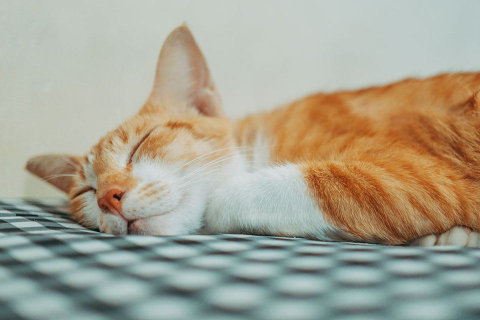

It's a beautiful, breezy monday morning. The sun is shining, the birds are chirping, and Jerry is still fast asleep, completely unfazed by his third alarm of the morning.
Suddenly..
"YOUCH!"
Jerry jolts awake as his pet cat, Nappa, lovingly kneads biscuits directly into his eyelids. Groaning, Jerry rubs his sore eyes and reaches for his phone to see what's happening in the world.
He glances at the screen..
8AM?!
His eyes widen. His heart drops.
JERRY'S SHIFT STARTS AT 9!
